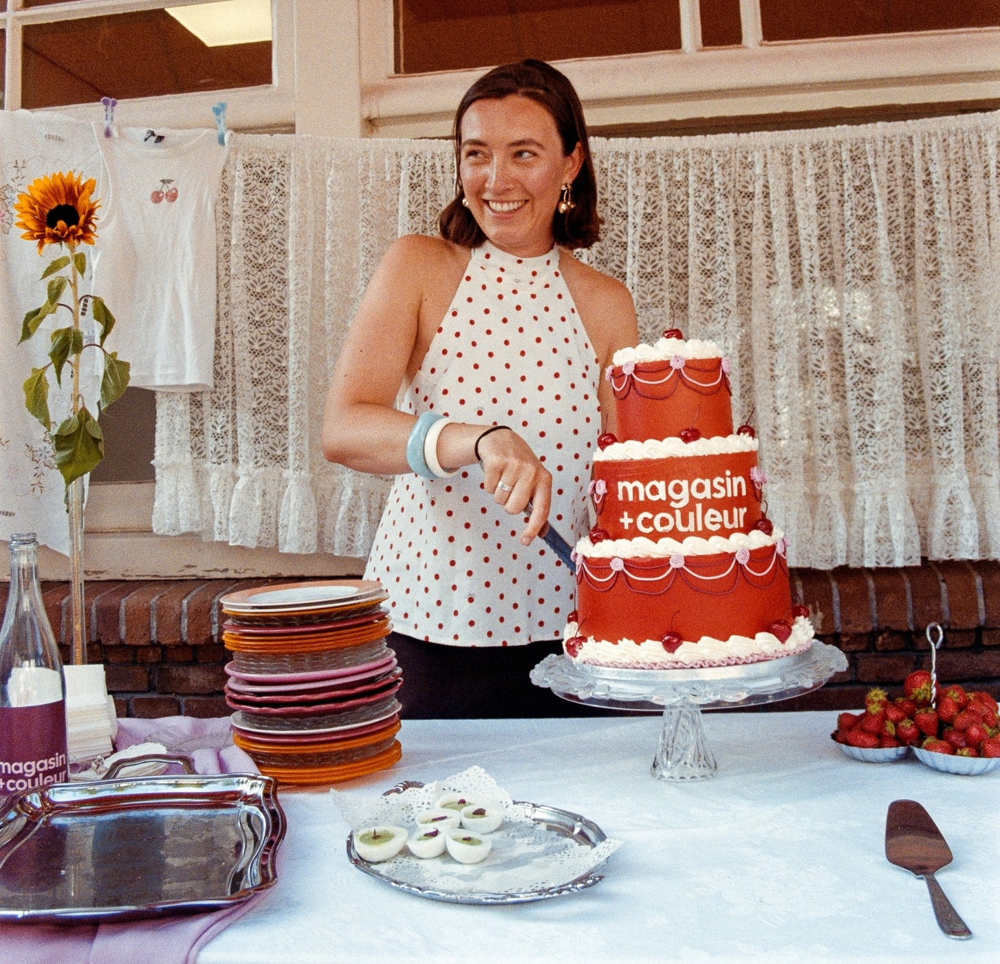

Freelance SEO Specialist voor duurzame, mensgerichte groei
Na mijn afstuderen als kunsthistorica vond het werk als SEO specialist mij. Mijn liefde voor taal, schrijven en creativiteit, gecombineerd met een analytische blik, bleek goed te passen bij dit vakgebied. Inmiddels heb ik al meerdere jaren ervaring binnen dit beroep en gewerkt voor uiteenlopende bedrijven, makers en organisaties.
Als freelance SEO specialist help ik bedrijven, organisaties en makers om online beter vindbaar te worden in zoekmachines zoals Google, zonder daarbij hun identiteit of eigenheid te verliezen. Ik werk aan SEO-strategieën die gericht zijn op de lange termijn, met aandacht voor inhoud, karakter en technische kwaliteit. De mensen achter het merk én degene die zij willen bereiken staan daarbij altijd centraal.
Ik geloof dat duurzame SEO ontstaat wanneer inhoud klopt, taal zorgvuldig is gekozen en een website logisch en rustig is opgebouwd. Vanuit die overtuiging werk ik samen met organisaties die waarde hechten aan kwaliteit, nuance en betekenis.
Op zoek naar hulp van een freelance SEO specialist bij de SEO van jouw website? Stuur mij vrijblijvend een berichtje via onderstaande knop 'contact me'. Ik kijk ernaar uit om van je te horen! 🌷
Wat doet een freelance SEO specialist?
Een freelance SEO specialist helpt websites beter zichtbaar te worden in zoekmachines zoals Google. Dat gebeurt niet door trucjes of snelle optimalisaties, maar door zorgvuldig te kijken naar hoe een website is opgebouwd, wat zij vertelt en voor wie zij bedoeld is.
In de kern draait zoekmachine optimalisatie (SEO) om het samenbrengen van verschillende lagen: inhoud die aansluit bij wat mensen zoeken, een logische structuur die rust en overzicht biedt, en een technische basis die zoekmachines helpt de website goed te begrijpen. Wanneer deze elementen op elkaar zijn afgestemd, ontstaat er ruimte voor duurzame groei.
Als freelance SEO specialist kijk ik daarbij verder dan cijfers en posities alleen. Ik onderzoek zoekgedrag, analyseer bestaande content en ontwikkel een doordachte SEO-strategie, altijd met oog voor toon, betekenis en identiteit. Het doel is niet om zoveel mogelijk bezoekers te trekken, maar om de juiste mensen te bereiken op een manier die natuurlijk en geloofwaardig voelt.
Mijn werkwijze als SEO specialist
Achter iedere SEO-strategie, analyse en tekst schuilt een manier van denken en voelen. Hieronder lees je wie ik ben als freelance SEO specialist, en welke waarden en interesses mijn werk vormgeven.
In mijn werk en samenwerkingen hecht ik om te beginnen veel waarde aan vriendelijkheid, vertrouwen, heldere communicatie en humor. Persoonlijk contact is voor mij geen formaliteit, maar een belangrijk onderdeel van hoe ik werk en denk. Door elkaar echt te leren kennen - soms in één gesprek, soms over meerdere momenten - ontstaat er voor mij een scherper gevoel voor toon, inhoud en richting. Iets wat essentieel is binnen een duurzame SEO-samenwerking.
Verschillende onderwerpen en talen als verrijking
Als mens en als freelance SEO specialist houd ik daarnaast van diversiteit. Mijn interessegebied is breed en mijn nieuwsgierigheid groot. Naast kunst en architectuur verdiep ik mij in mijn dagelijks leven daarom graag in verschillende thema's. Denk aan gezondheid, diëtiek, reizen, filosofie, psychologie, politiek en spiritualiteit.
Dat ik bij verschillende SEO-opdrachten telkens weer in een ander onderwerp mag duiken, ervaar ik dan ook als een verrijking. Óók wanneer deze misschien niet direct tot mijn eigen leefwereld behoort. Juist die inhoudelijke betrokkenheid maakt dat SEO geen trucje wordt, maar een doordachte vertaalslag tussen bedrijf en doelgroep.
Iets anders wat ik aanschouw als een verrijking, is het lezen en schrijven in verschillende talen. Ik voel me thuis in het Nederlands, Engels en Frans, en werk daarnaast ook met Duits en Spaans. Elke taal draagt zijn eigen ritme, nuance en gevoelslaag in zich. Juist dat verschil fascineert mij en neem ik mee in mijn SEO-werk: niet door teksten letterlijk te vertalen, maar door te zoeken naar wat in elke taal natuurlijk en kloppend voelt.
Wanneer we goed bij elkaar passen
De bedrijven waarbij ik me erg op mijn plek voel, kenmerken zich door een menselijke sfeer en een oprechte passie voor wat zij doen. Ik vind het zeer bijzonder om kleine tot middelgrote bedrijven te helpen groeien dankzij SEO. Voor dit soort bedrijven kunnen een aantal goede teksten, een heldere structuur of een aangescherpte focus een groot verschil maken. Iets wat mij veel voldoening geeft.
De websites van grotere bedrijven bieden een ander soort uitdaging, welke ik op een eigen manier minstens zo interessant vind. Vaak is er al een stevige basis aanwezig, maar ontbreekt het aan overzicht of samenhang. De kunst zit dan in het herkennen van waar ruimte ligt voor verfijning en verbetering. Het past bij mij om te zoeken naar de harmonie, essentie en structuur die ook de SEO van dit soort bedrijven verder laat groeien.
Een selectie van mijn ervaringen als freelance SEO specialist
Door de jaren heen heb ik als Freelance SEO specialist mogen werken voor uiteenlopende opdrachtgevers, van culturele instellingen en creatieve makers tot bijzondere webshops en ondernemers in de persoonlijke dienstverleningssector. Juist die diversiteit heeft mij geleerd hoe belangrijk het is om SEO altijd af te stemmen op context, doelgroep en merkidentiteit.
Onderstaande projecten geven een indruk van de manier waarop ik SEO inzet: niet als doel op zich, maar als middel om de juiste mensen op het juiste moment te bereiken.
Magasin Plus Couleur: vintage servies op de voorpagina van Google

Magasin Plus Couleur is het bedrijf van een jonge onderneemster, Merlijn, die zich focust op het verhuren en verkopen van vintage Frans serviesgoed. Als groot liefhebber van vintage, was het een plezier om Merlijn te mogen helpen met de SEO van haar webshop.
Dit project gaf mij volledige vrijheid in zowel de SEO-strategie als het schrijfwerk. Merlijn vertrouwde het aan mij toe. Mijn doel was om stijlvolle teksten te schrijven die de sfeer van Magasin Plus Couleur echt zouden weerspiegelen. De toon mocht enigszins editorial zijn, voelde ik, en de teksten moesten daarnaast informatief zijn zonder zwaar te worden. Het gaat hier immers om vintage serviesgoed.
Merlijn was gelukkig blij met het resultaat en dat geldt ook voor de zoekmachines. Op de Engelse termen 'vintage tableware' en 'vintage wine glasses' verschijnt Magasin Plus Couleur dankzij de nieuwe teksten nu op de voorpagina van Google. Via de links kun je de pagina's zelf bekijken.
Brinkman Fine Real Estate

Brinkman Fine Real Estate is een opdrachtgever met een uitgesproken visie. Waar veel bedrijven binnen SEO inzetten op het beantwoorden van zoveel mogelijk vragen om een breed publiek te bereiken, is het voor Brinkman belangrijker om te antwoorden aan een sfeer, die vervolgens een meer niche markt aanspreekt.
Verfijning, uniciteit en een sterk bewustzijn van schoonheid en historische waarde kenmerken zowel Brinkman als hun clientèle. Zij en ook het aanbod - historische woningen, antieke objecten, kunst en custom interieur ontwerp - vragen allemaal om een benadering met ziel.
Een zekere mystiek, poësie en finesse moeten dan ook op ieder niveau bewaard en bevestigd worden, ook in de teksten. Ik denk ook bij Brinkman na over hoe een pagina zo goed mogelijk vindbaar kan worden, al is het doel dit zo subtiel mogelijk te doen. In de tekst ligt de nadruk op suggestie, toon en nuance, terwijl de vindbaarheid zorgvuldig in de structuur is verankerd.
Puur vanuit SEO oogpunt had ik graag gezien dat er al een reeks goede, geoptimaliseerde teksten op de website stonden. Maar het werkt bij deze opdrachtgever nou eenmaal wat anders en daar pas ik mij op aan. Ook dat hoort bij het vak van freelance SEO specialist en maakt het juist uitdagend. Brinkman zal op deze manier wellicht minder snel als anderen op de voorpagina van Google staan, maar de groei die ontstaat is een reflectie van een duurzame benadering van hun kern.
Beaujolais Wijnen

Mijn werk als freelance SEO specialist voor Beaujolaiswijnen.be was nog maar net begonnen toen de eigenaar besloot het over een andere boeg te gooien. De webshop met wijnen uit de Beaujolais werd van de hand gedaan en een restaurant aangekocht. Domage, want ik was er op gebrand geweest deze webshop SEO-technisch succesvol te maken.
Gelukkig betekende de korte samenwerking niet dat ik niks had kunnen bereiken. Binnen de vijftig uur die ik, verspreid over drie maanden, had mogen werken aan beaujolaiswijnen.be heb ik in de eerste plaats gezorgd voor correcte indexatie. Een aantal pagina's van de Belgische versie van de website bestonden nog niet en moesten worden aangemaakt alvorens ze te indexeren. Andere pagina's waren verkeerd geïndexeerd of zelfs nog helemaal niet. Toen dit eenmaal op orde was, heb ik ook een aantal cruciale technische problemen opgelost. Zo klopte de basis weer en kwam er ruimte voor teksten.
Nog onbewust over het naderende einde, deed ik zoekwoordenonderzoek en besloot ik over de content van de verschillende pagina's. Na afronding van de tekst voor de landingspagina, kwam vervolgens het nieuws dat het werk stopte. De afbeelding laat echter zien dat het werk niet voor niks was. Na een lange periode van onzichtbaarheid nam het aantal vertoningen weer toe en begonnen pagina’s binnen België te stijgen op relevante zoektermen. Een mooi voorbeeld van hoe technische SEO ruimte kan creëren voor groei.
Wandelstok Winkel en Dryonline.de
Voor Careland BV werkte ik ruim een jaar aan de SEO van verschillende webshops. Aan het begin van onze samenwerking kocht Chriz, de eigenaar van Careland, de webshop wandelstok-winkel.nl over, met als doel deze inhoudelijk en strategisch opnieuw vorm te geven.
Mijn werkzaamheden startten met uitgebreid zoekwoordenonderzoek, gevolgd door het schrijven van nieuwe, frisse teksten. Op zoektermen als ‘houten wandelstok’, ‘anatomische wandelstok’, ‘bijzondere wandelstok’ en ‘carbon wandelstokken’ verschijnen de betreffende pagina’s inmiddels op de voorpagina van Google.
Naast content werkte ik ook aan aanvullende SEO-onderdelen: ik zette een Facebookpagina op, ondersteunde bij het verkrijgen van backlinks en herschreef standaardmails binnen het aankoop- en verzendproces. Parallel hieraan werkte ik voor de Duitse webshop dryonline.de, waar ik hielp bij contentoptimalisatie en het schrijven van nieuwe teksten binnen een gevoelig en functioneel productdomein.
Wat typeert mijn aanpak als freelance SEO specialist?
Wanneer ik nadenk over wat mijn werk als SEO specialist typeert, komen vooral menselijkheid, authenticiteit, helderheid en sfeer naar voren. Bij het analyseren van een website en het interpreteren van data staat voor mij altijd de mens centraal: zowel de persoon achter het bedrijf als degene die de website bezoekt.
SEO dient in de kern een commercieel doel: het vergroten van zichtbaarheid, bereik en uiteindelijk conversie. Tegelijkertijd is het voor mij belangrijk om dat doel altijd subtiel, zacht en elegant over te brengen op de bezoeker. Harde commerciële taal past niet bij wie ik ben, noch bij mijn benadering van SEO.
Mijn aanpak als freelance SEO specialist is daarnaast zowel analytisch als intuïtief. Ik combineer data, zoekgedrag en technische inzichten met gevoel voor taal, toon en verhaal. Ik vind het dan ook belangrijk om verder te kijken dan zoekvolumes en concurrentie, en de vraag te stellen wat een website écht dient te vertellen.
Soorten SEO projecten waarbij ik kan ondersteunen
Als freelance SEO specialist ondersteun ik bij uiteenlopende projecten, zowel voor nieuwe websites als voor bestaande platforms die toe zijn aan verdieping of herpositionering. Denk aan het opzetten van een SEO-structuur vanaf nul, het herschrijven en optimaliseren van bestaande content, of het ontwikkelen van een contentstrategie op lange termijn.
Daarnaast help ik graag bij SEO voor specifieke thema’s of niches, bij meertalige websites, en bij projecten waarbij inhoudelijke diepgang en zorgvuldige formulering essentieel zijn. Altijd in overleg, altijd afgestemd op jouw doelen en mogelijkheden.
Naast een tekst voor de inhoud, kan ik ook ondersteunen bij de technische SEO van een website. Door mijn kennis van HTML, CSS en JavaScript begrijp ik hoe een website technisch is opgebouwd en waar knelpunten kunnen ontstaan. Ik help je graag met je technische vraagstukken: van indexatie en technische fouten in de website tot het verbeteren van structuur en functionaliteit.
Op zoek naar een freelance SEO specialist?
Ben je op zoek naar een freelance SEO specialist die verder kijkt dan cijfers en posities alleen, en die meedenkt over inhoud, toon en betekenis? Dan denk ik graag met je mee. Of je nu aan het begin staat van een traject, of al langer werkt aan je online zichtbaarheid: je bent van harte welkom om contact op te nemen. Klik hieronder op ‘contact me’ en stuur mij vrijblijvend een berichtje.
Wil je graag meer weten over wat een goede SEO tekst definiteert en hoe ik het schrijven hiervan benader? Lees dan mijn pagina SEO teksten laten schrijven.
'Isabel heeft me heel fijn geholpen met teksten voor m’n website. Ze begreep het gevoel wat ik wil uitdragen meteen. En het levert ook al resultaat! Ik ben goed te vinden op Google' - Merlijn, Magasin Plus Couleur, via Google reviews